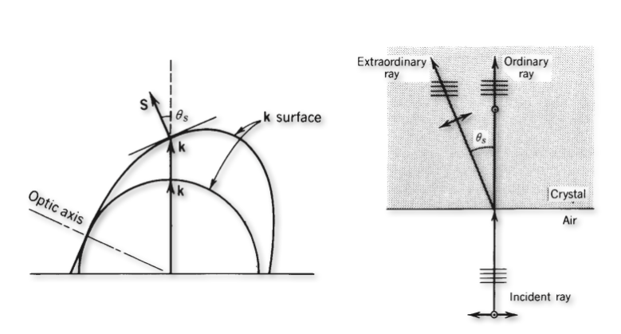
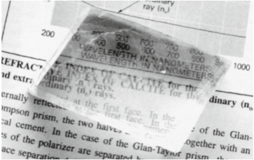

Anisotropic Materials
Light propagation
So war we have only discussed isotropic materials, meaning that the speed of light was independent by the direction of light propagation in the material. Often, the light propagation is, however, not isotropic as the underlying materials have an anisotropic structure.
Just consider the above molecule \(C_2H_4\) (Ethen), where the two carbon atoms are bound by a double bond. In an external electric field aligned along that bond, we certinly expect the electrons to be more easily displaced over a larger distance, when the field is aligned parallel to the double bond. The dipole induced will therefore depend on the orientation of molecule and electric field. We therefore need to express the electronic polarizability \(\alpha\) for the calculation of the dipole moment \(\vec{p}=\alpha \vec{E}\) as a tensor \(\overleftrightarrow{a}\).
\[ \overleftrightarrow{a}= \begin{pmatrix} \alpha_{11} & \alpha_{12} & \alpha_{13} \\ \alpha_{21} & \alpha_{22} & \alpha_{23} \\ \alpha_{31} & \alpha_{32} & \alpha_{33} \end{pmatrix} \]
Consequently also the susceptibility \(\chi\), the dielectric function \(\epsilon_r\) and refractive index \(n\) will be tensors in anisotropic materials. The entries of these tensors now depend on the choice of the coordinate system, since the polarisabilities are connected to the structures. Accordingly, there is also coordinate system in which the tensor becomes completely diagonal.
\[ \overleftrightarrow{\epsilon_r}= \begin{pmatrix} \epsilon_{11} & 0 & 0 \\ 0 & \epsilon_{22} & 0 \\ 0 & 0 & \epsilon_{33} \end{pmatrix} \]
This coordinate systems is the principle coordinate system of the tensor. The electric displacement field \(\vec{D}\) is related to the electric field \(\vec{E}\) by
\[ \vec{D}=\epsilon_0 \overleftrightarrow{\epsilon_r} \vec{E} \]
and in the principle coordinate system of the tensor we obtain
\[ \begin{pmatrix} D_1 \\ D_2 \\ D_3 \\ \end{pmatrix} = \begin{pmatrix} \epsilon_0\epsilon_{11} E_1\\ \epsilon_0\epsilon_{22} E_2\\ \epsilon_0\epsilon_{33} E_3\\ \end{pmatrix} \]
From this it becomes evident, that the displacement field \(\vec{D}\) is not anymore parallel to the electric field \(\vec{E}\). This also means now, that the wavevector \(\vec{k}\) is now perpendicular to the displacement field and not to the electric field. The magnetic field is still directed along the same direction and thus the Poynting vector is not parallel to the wavevector. Energy and phasefronts flow in different directions.The sketch below indicates the relations of the vectors.
The tensorial nature of the dielectric function has now consequences for the propagation of light. In general different symmetries are considered. If we have for example two of the diagonal elements be equal to each other
\[ \epsilon_{11}=\epsilon_{22}\neq\epsilon_{33} \]
then we call the material uniaxial. The system has one optical axis. In case
\[ \epsilon_{11}\neq\epsilon_{22}\neq\epsilon_{33}\neq\epsilon_{11} \]
we call the material biaxial and the material has two optical axes. We will have a look at the meaning of an optical axis a bit later.
A tensor as the dielectric tensor (similar to the tensor of inertia) can be geometrically represented by an ellipsoid with three different half axes as depicted below. This can be done for the refractive index or the dielectric tensor. When doing so with the refractive index, we obtain an index ellipsoid, where the half-axes correspond to the three refractive indices \(n_1=\sqrt{\epsilon_{11}}\), \(n_2=\sqrt{\epsilon_{22}}\) and \(n_3=\sqrt{\epsilon_{33}}\).
To find out the relevant refractive indices for a certain propagation direction on now undertakes the following steps:
- chose a direction of light propagation with the direction of the wavevector \(\vec{k}\)
- construct a plane perpendicular to the wavevector
- take the intersection of this plane with the ellisoid, which is in general an ellipse
- the ellipse has a long and a short axis, which correspond to the direction of the so-called normal modes
- a \(\vec{D}\) field along those half-axes propages with the corresponding refractive index \(n_o\) (ordinary), \(n_e\) (extra_ordinary)
An optical axis is now a propagation direction, for which the refractive index does not depend on the direction of the electric field. For a biaxial material, there are two distinct directions for a propagation, while there is only one for uniaxial.
Considering now in more detail the propagation of light as a function of the direction of light propagation one obtains a dispersion relation (how the wavenumber depends on teh direction for a given frequency of light). This surface is the so-called k-surface, which in general consists of 2 sheets. This k-surface is obtained from Maxwells equations
\[ \begin{aligned} \vec{k}\times \vec{H} & = -\omega \vec{D}\\ \vec{k}\times\vec{E} &=\omega \mu_0 \vec{H} \end{aligned} \]
which leads to
\[ \vec{k}\times(\vec{k}\times\vec{E})+\omega^2\mu_0 \epsilon_0 \overleftrightarrow{\epsilon_r} \vec{E}=0 \]
This equation leads to a system of equations for the components of the wavevector (\(\vec{k}=\{k_1,k_2,k_3\}\)) that define the k-surface for a given frequency.
This k-surface has, for a uniaxial material, in the plane (here x-z plane) a circular and an elliptical shape, where the circular shape corresponds to the ordinary refractive index and the elliptical to the extra-ordinary refractive index. In the unixial case both surfaces intersect along the optical axis. The image below shows the situation for the situation of a uniaxial material.
If we select now a specific direction of propagation for the light with the direction of \(\vec{k}\), the intersections of the k-surface with the k-vector deliver the solutions for the refractive indices. From the figure above, it becomes obvious, that the electric field vector must be perpendicular to the plane in the case of the ordinary refractive index. Only in this case, the wavevector can be rotated in the above sketch such that the direction of the electric field does not change. If the electric field is within the plane of the above sketch, the field direction with respect to the crystal structure changes and therefore the refractive index changes.
Therefore the extra-ordinary refractive index is valid for the p-polarization and the ordinary refractive index is valid for the s-polarization.


Let’s discuss the sketches above, which show the general case of birefringence. The image on the left side shows an interface between air on the bottom and the anisotropic material on the top. The wavevector is incident from below and is normal zo the surface. Its direction will intersect both k-surfaces and thereby select the ordinary refractive index and the extra-ordinary refractive index for the two different polarization directions. Both waves propgate in the same direction, so their wavefronts are perpendicular to the k-vectors as shown in the middle sketch. Yet, the Poynting vectors go in different direction. The Poynting vector, which points in the direction of energy propagation, is always perpendicular to the k-surface, since the k-surface is an isoenergy surface (think about that for a moment). This means that the beam is split into two beams with parallel wavefronts as indicated. This phenomenon is called birefringence and separates two orthogonal polarizations into two beams as indicated.
This effect is probably best visible, when you put a birefringent material like the common calcit crystal on a newpaper or book. You will immediately see the birefringence in the double images as in the figure above to the right.
The different refractive index for both polarizations make those materials very suitable for the creating polarizing optical elements like beam splitters. A selection of different polarizing beam splitters is shown in the image below.
Birefringence is often observed in mechanically stressed materials like quickly cooled glasses or stretched polymer foils. The latter is demonstrated in the images below, where we used
Wave retarders
Anisotropic materials can now but cut in specific way, for example such that the optical axis is parallel to the interface as in the picture below. Under these circumstances at normal incidence both wavevectors and both Poynting vectors of the polarizations propagate along the same direction. Yet, the p-polarization has a lower phase velocity (long k-vector) than the s-polarization. If now the incident light has now elecric field components parallel and perpedicular to the optical axis which are of same amplitude, then one component of the incident polarization is delayed in its phase with respect to the other comonent.
Let
\[ \vec{E}=(E_{0x}\hat{e}_x +E_{0y}\hat{e}_y)e^{i(\omega t -k z)} \]
be the incident electric field of the plane wave travelling along the z-direction with \(E_{0x}=E_{0y}\) and the optical axis aligned along the y-axis. Then each vector component of the wave travels with a different wavevector
\[ \begin{aligned} E_x & = E_{0x}e^{i(\omega t -n_e k_0 z)}\\ E_y & = E_{0y}e^{i(\omega t -n_o k_0 z)} \end{aligned} \]
After a material of thickness \(d\) both components have accumulated a phase shift of
\[ \Delta \phi=(n_e-n_o)k_0 d \]
Quarter Wave Plate
If we design now a material of a certain thickness such that the phase shift is \(\Delta \phi=\pi/2\), then the light exiting the material will be circularly polarized as in the sketch on the right side. The minimum thickness of the crystal is then
\[ d=\frac{\pi}{2}\frac{1}{k_0(n_e-n_o)}=\frac{\lambda}{4(n_e-n_o)} \]
The crystal thickness is, however, not restricted to this minimal thickness, but to any thickness which creates a phase difference of \(\pi/2\). Such an optical element which is generating a phase difference of \(\pi/2\) between the different electric field components with respect to the optical axis is called a Quarter Wave Plate, since the phase difference corresponds to a quarter wavelength.
If the two elecric field components are not of equal amplitude, then a quarter wave plate will generate elliptically polarized light. Note that if you send circular polarization to a QWP, linearly polarized light will be created.
Half Wave Plate
The phase difference between the two elecric field components could also be adjusted to be half a wavelength of \(\pi\). In this case, one of the components is flipped in its orientation with respect to the other. This is happening for the component perpendicular to the optical axis. If the incident electric field vectors makes an angle of \(45^{°}\) to the optical axis, the field vector after the half wave plate will be rotated by \(90^{°}\). For any other angle of incidence, the angle between the incident and the outgoing linear polarization will correspond to twice the angle between the optical axis and the incident polarization.